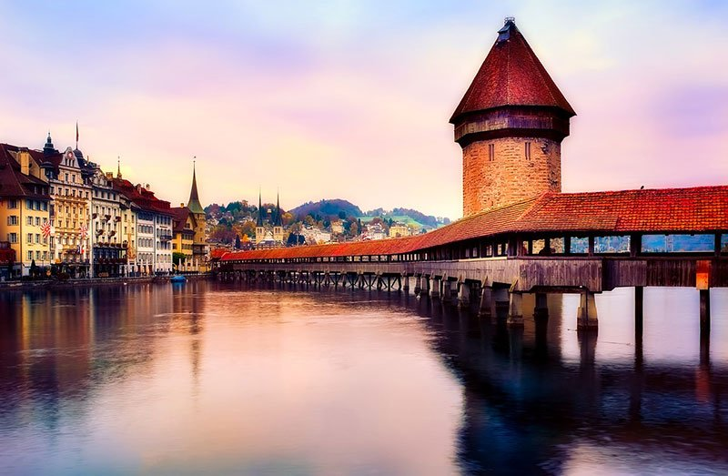
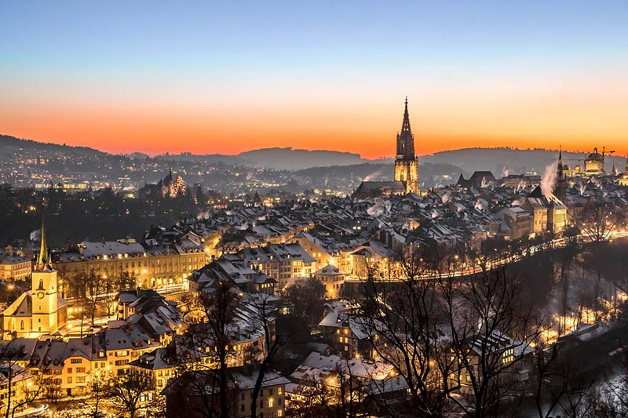

<!DOCTYPE html>
<html lang="en">
</html>
<head>
		<meta charset="UTF-8">
		<meta name="viewport" content="width=device-width, initial-scale=1">
		<title>Switzerland</title>
	<link rel="icon" href="icon.ico">
	<style>

		*{
			margin: 0;
			padding: 0;

		}
		body {
			font-family: 'Gill Sans MT', sans-serif}
		nav{
			background-image: url("wp3528291.jpg");
			height: 620px;
			background-attachment: fixed;
			background-repeat: no-repeat;
			background-size: cover;
		}

		.left-title {
			display: flex;
			justify-content: space-between;
		}

		.center-title {
			text-transform: uppercase;
			font-size: 30px;
			margin: 0;
			position: relative;
			top: 25px;
			left: 25px;
			color: white;
		}
		a {
			text-decoration: none;
			color: white;
		}
		nav ul a:hover {
			border: solid;
			border-right: 3px white;
			border-left: 3px white;
		}
		.top-of-btt-text-cont {
			padding: 0;
			text-transform: uppercase;
			font-size: calc(1em + 3vw);
			color: #FFF5EE;
			border: 2px solid ;
		}
		.watch-now-button {
			margin-top: 10%;
			padding: 10px;
			border: solid 1px white ;
			border-radius: 50px;
			background-color: transparent;
			font-size: 20px;
		}
		.first-text-title {
			font-size: calc(1em + 0.5vw);
			margin-top: 30px;
			color: #d900ff;
		}
		.first-text-main {
			font-size: calc(1em + 0.2vw);
			margin-right: 300px;
			margin-left: 300px;
		}
		.block2 {
			height: 60%;
			width: 70%;
		}
		.block1{
			height: 60%;
			width: 70%;
		}
		.block-cont1 {
			text-align: center;
			width: 50%;
			margin-top: 0;
		}
		.block-cont2 {
			text-align: center;
			width: 50%;
		}

		.block-title1 {
			font-size: 25px;
			color: #6495ED;
			letter-spacing: 2px;
		}
		.block-title2 {
			font-size: 25px;
			color: #6495ED;
			letter-spacing: 2px;
		}
		.grey-line {
			height: 50px;
			background-color: grey;
			margin-top: 100px;
			margin-bottom: 0;
			display: flex;
			justify-content: space-around;
			align-items: center;
			color: white;
			font-size: 20px;
		}
		.black-line {
			height: 120px;
			background-color: black;
			display: flex;
			justify-content: space-around;
			align-items: center;
			color: white;
			font-size: 20px;
		}
		.black-line-text {
			margin-top: 20px;
		}
		nav div {
			display: flex;
			justify-content: center;
		}
		section {
			margin-top: 200px;
		}

		ul {
			display: inline-flex;
			justify-content: space-between;
			color: white;
			margin-top: 35px;
			margin-right: 20px;
			font-size: 20px;
			list-style-type: none;
		}
		.main-content-container {
			display: flex;
			align-items: center;
			margin-top: 100px;
		}
		.block-text1 {
			margin: 0 100px 0;
		}
		.block-text2 {
			margin: 0 70px 0;
		}
		@media (max-width: 1000px){
			ul {
				display: none;
			}
			.main-content-container {
				display: block;
			}
			.block-text1 {
				margin: auto;
			}
			.block-text2 {
				margin: auto;
			}
			.first-text-main {
				margin: auto;
			}
			.block-cont1 {
				width: auto;
			}
			.block-cont2 {
				width: auto;
				margin-top: 20px;
			}
		}
		li {
			margin-left: 40px;
		}
		.first-text-cont {
			text-align: center;
		}
	</style>
</head>
<body>


<nav>
	<div class="left-title">
	<p class="center-title">Ruslan project</p>
		<ul>
			<li><a href="#">Home</a></li>
			<li><a href="#">Destination</a></li>
			<li><a href="#">Experiences</a></li>
			<li><a href="#">Events</a></li>
			<li><a href="#" class="watch-now-button">Take an action</a></li>
		</ul>
		</div>
	<section>
		<div class="top-of-btt-text-cont">
	<p class="top-of-btt-text"><strong>Sweet Switzerland landscapes</strong></p>
		</div>
		<div>
	<a href="https://www.youtube.com/watch?v=W4Ou96H-cPc" class="watch-now-button">Watch now</a>
</div>
</section>
</nav>


<header>
	<div class="first-text-cont">
	<p class="first-text-title"><strong>Switzerland landscapes</strong></p>
	<p class="first-text-main">Switzerland is well known for the Alps in the south and south east. North of the Alps,
		the Swiss Plateau runs along the east–west axis of the country. Most of the population of Switzerland lives on
		the rolling hills and plains of the plateau. The smaller Jura Mountains are located on the north
		west side of the plateau.</p>
	</div>


	<div class="main-content-container">

	<div class="block-cont1">
		
		<p class="block-title1"><strong>Montreux</strong></p>
		<p style="letter-spacing: 1px" class="block-text1">Known for its mild microclimate and Jazz Festival held in July, Montreux
			is one of the best summer destinations in the world. It sits in the heart of the Swiss Riviera and impresses
			with grand Belle Époque buildings and stunning promenade.</p>
	</div>

	<div class="block-cont2">
		
		<p class="block-title2"><strong>St. Moritz</strong></p>
		<p style="letter-spacing: 1px" class="block-text2">Think of impressive glaciers, jagged peaks, and lush forests. That’s what
			you’ll get in St. Moritz, one of the most famous winter destinations in the world. This small town has
			hosted two winter Olympics and is a must-go for ski enthusiasts.</p>
	</div>

	</div>


</header>


<div class="grey-line">
	<p>WANT TO KNOW MORE ABOUT SWITZERLAND?</p>
</div>
<div class="black-line">
	<p class="black-line-text">2020 © Switzerland info All rights reserved</p>
</div>
</body>